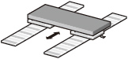

MELSERVO-J5 Series Linear Servo Motor Fitur

Kinerja Dasar
- Kecepatan maksimum: 3 m/s (seri LM-H3), 6,5 m/s (seri LM-AJ)
- Kisaran daya dorong maksimum: 122 N hingga 7200 N. Ukuran kecil dan daya dorong tinggi dicapai dengan kepadatan lilitan yang ditingkatkan dan geometri inti dan magnet yang dioptimalkan sebagai hasil dari analisis medan elektromagnetik.
- Tersedia enam seri: tipe inti (dua seri), inti pendingin cair, inti gaya lawan tarikan magnetik, dan tipe tanpa inti (dua seri).
- Motor servo linier kompatibel dengan berbagai encoder linier antarmuka serial. Resolusi encoder linier berkisar dari 1 nm ke atas.
- Sistem berkinerja tinggi seperti kontrol sinkron tandem dengan akurasi tinggi dicapai dengan CC-Link IE TSN.
- Motor servo linier memiliki ketahanan lingkungan, dirancang untuk ketinggian 2000 m dan suhu sekitar hingga 60 ℃. *1, 2
- *1.Turunkan kecepatan/dorongan saat menggunakan motor servo linier pada ketinggian melebihi 1000 m dan pada suhu sekitar yang tinggi.
- *2.Seri LM-AJ/seri LM-AU dirancang untuk ketinggian 1000 m dan suhu sekitar hingga 40 ℃.
Kinerja Mesin Lebih Tinggi
Untuk kinerja mesin yang lebih tinggi
- Peningkatan produktivitas karena bagian penggerak berkecepatan tinggi.
Untuk penggunaan yang lebih mudah
- Motor servo linier memungkinkan mesin yang sederhana dan ringkas dengan kekakuan tinggi.
- Pengoperasian yang lancar dan sistem yang bersih tercapai.
Untuk konfigurasi mesin yang fleksibel
- Sistem multi-head dan tandem mudah dikonfigurasi.
- Motor servo linier cocok untuk aplikasi long-stroke.
[Menawarkan lebih banyak keuntungan daripada sistem penggerak sekrup bola konvensional]
Ideal untuk Sistem Multi-Head
Optimal untuk sistem penggerak linear yang membutuhkan kecepatan tinggi dan akurasi tinggi. Mudah mencapai konfigurasi tandem atau konfigurasi multi-head.
Konfigurasi tandem
Motor servo linier yang dikonfigurasi secara tandem cocok untuk sistem besar yang memerlukan operasi sinkron yang sangat akurat antara dua sumbu.

Konfigurasi multi-head
Sistem multi-head memungkinkan kontrol dua kumparan motor secara independen, sehingga menyederhanakan mekanisme mesin. Sistem ini cocok untuk mesin yang memerlukan waktu siklus pendek.